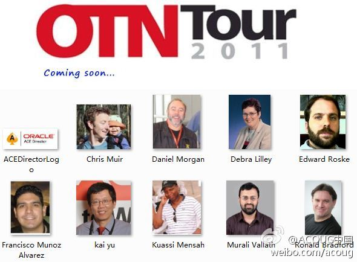

#OTN CHINA TOUR#这个活动在中国是第几次办?@ACOUG中国:#OTN CHINA TOUR# 现已确认9位OTN专家，其中8位为Oracle ACE Director，1位为Oracle公司Group Product Manager，阵容强大，速度围观！详细介绍：网页链接 
这是第一次在#OTN CHINA TOUR#上有Java的分会场吧? 什么时候有Java方向的ACE Director?@ACOUG中国:#OTN CHINA TOUR#活动正式定名为“Oracle技术嘉年华（OTN CHINA TOUR 2011）”。现已确认12位外国专家及部分国内专家，不乏Tim Hall，Daniel Morgan，Francisco，盖国强，崔华等国内外大牛！@eygle @dbsnake @云和恩墨
愿意工作时间之外参加技术交流会的总会是那么一拨人,或者一类人. 在成都技术沙龙上讲JDK 7时, 设了一个有奖问答, 奖品是有Oracle logo的夜餐垫. 那个答对的参加者穿着"Open Solaris"的T-Shirt上来领奖, 一问, 原来是两年前在学校时参加过Sun的大学技术日.
Open Solaris的T-Shirt设计得很不错, 还有女款, 我挺喜欢, 也常穿. T-Shirt最怕设计成像送快递或者外卖的了, 我有同事曾收集这类衣服给孩子当尿布, 因为棉质很好. //@德先生在哪：我也有一件Open Solaris，哈哈@Ada李力:愿意工作时间之外参加技术交流会的总会是那么一拨人,或者一类人. 在成都技术沙龙上讲JDK 7时, 设了一个有奖问答, 奖品是有Oracle logo的夜餐垫. 那个答对的参加者穿着"Open Solaris"的T-Shirt上来领奖, 一问, 原来是两年前在学校时参加过Sun的大学技术日.
我还真收到了这样的短信, 开头确实是我的名字, 就是网址一看就是破站: www.nms139.com/bjgjj/a1757284.nms. //@牛秀元：公积金可以这么方便提现？存疑！---:该账号已关闭，现无法查看。
真网站竟然看起来像钓鱼网站, 可政府为什么不用gov这样的域名呢? //@任学武-seektolive：网页链接看看这个//@Ada李力：我还真收到了这样的短信, 开头确实是我的名字, 就是网址一看就是破站: www.nms139.com/bjgjj/a1757284.nms. //@牛秀元：公积金可以这么方便提现？存疑！---:该账号已关闭，现无法查看。
行家 //@吕科Beijing:这是移动的网站，提供的网信服务。比短信彩信更强的是用户客户可通过网信提交数据，进行交互。 //@Ada李力:真网站竟然看起来像钓鱼网站, 可政府为什么不用gov这样的域名呢? //@任学武-seektolive：网页链接看看这个---:该账号已关闭，现无法查看。